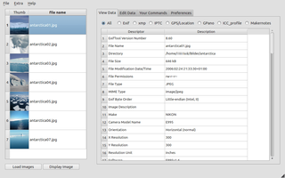
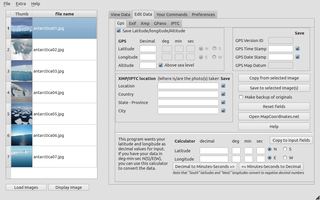

pyExifToolGUI
Dieser Artikel wurde für die folgenden Ubuntu-Versionen getestet:
Ubuntu 14.04 Trusty Tahr
Zum Verständnis dieses Artikels sind folgende Seiten hilfreich:
pyExifToolGUI  ist eine grafische Oberfläche (GUI) für das Kommandozeilenprogramm ExifTool, mit dem die Metadaten von digitalen Fotos angezeigt und bearbeitet werden können. Allerdings beherrscht die Anwendung nur eine kleine Untermenge der von ExifTool zur Verfügung gestellten Funktionen, da es in erster Linie zur Anzeige bzw. nachträglichen Bearbeitung der Geodaten von digitalen Fotos entwickelt wurde.
ist eine grafische Oberfläche (GUI) für das Kommandozeilenprogramm ExifTool, mit dem die Metadaten von digitalen Fotos angezeigt und bearbeitet werden können. Allerdings beherrscht die Anwendung nur eine kleine Untermenge der von ExifTool zur Verfügung gestellten Funktionen, da es in erster Linie zur Anzeige bzw. nachträglichen Bearbeitung der Geodaten von digitalen Fotos entwickelt wurde.
Funktionen:
Anzeige der kompletten Exif-Daten
Bearbeiten von Datenfeldern der Metadaten-Formate Exif und XMP (IPTC-Daten können zwar beim Speichern erzeugt, aber nicht bearbeitet werden)
Export der Metadaten in die Formate TXT, CSV, HTML und XML
Zeitstempel-Korrektur bei eingescannten Fotos
Umbenennen von Bildern
Unterstützung für Google PhotoSphere
(GPano; benötigt ExifTool 9.07 oder neuer)
Erstellt wurde das Programm mit Python und Qt, die Sprache der Benutzeroberfläche ist Englisch. Des Weiteren kann es auch unter Mac OS X und Windows genutzt werden.
Voraussetzungen¶
Da kein fertiges Paket zur Verfügung steht, das sich um die automatische Installation von Abhängigkeiten kümmert, muss man diese vorab selbst installieren [1]. Folgende Pakete werden benötigt:
python-pyside (universe)
libimage-exiftool-perl (universe, für ExifTool)
 mit apturl
mit apturl
Paketliste zum Kopieren:
sudo apt-get install python-pyside libimage-exiftool-perl
sudo aptitude install python-pyside libimage-exiftool-perl
Installation¶
 Das Programm ist nicht in den offiziellen Paketquellen enthalten.
Das Programm ist nicht in den offiziellen Paketquellen enthalten.
Manuell¶
Über die Projektseite wird eine Archivdatei  mit dem Quelltext (source code) angeboten, die heruntergeladen und und entpackt [2] werden muss (empfohlen wird das Format .tar.gz). Im Archiv enthalten sind die englische Anleitung INSTALLATION.txt und ein Skript, mit dem man die Installation vornehmen kann. Dazu wechselt man in den beim Entpacken entstandenen Ordner, öffnet ein Terminalfenster [3] und gibt folgenden Befehl ein:
mit dem Quelltext (source code) angeboten, die heruntergeladen und und entpackt [2] werden muss (empfohlen wird das Format .tar.gz). Im Archiv enthalten sind die englische Anleitung INSTALLATION.txt und ein Skript, mit dem man die Installation vornehmen kann. Dazu wechselt man in den beim Entpacken entstandenen Ordner, öffnet ein Terminalfenster [3] und gibt folgenden Befehl ein:
sudo ./install_remove.py install
Alternativ kann man das Programm auch ohne Installation nutzen.
Hinweis!
Fremdsoftware kann das System gefährden.
Deinstallation¶
Das gleiche Skript kann auch zur Deinstallation benutzt werden:
sudo ./install_remove.py remove
Man sollte daher zumindest die heruntergeladene Archivdatei aufheben, um das Programm später wieder sauber deinstallieren zu können.
Verwendung¶
Bei Ubuntu-Varianten mit einem Anwendungsmenü erfolgt der Start [4] über den Menü-Eintrag "Grafik -> pyExifToolGUI".
Beim ersten Programmstart erscheint ein Fenster, dass auf eine fehlende Konfigurationsdatei hinweist. Diese Meldung kann einfach bestätigt werden. Der nächste Schritt wird in der Regel das Öffnen von Bilddateien sein. Über die Schaltfläche "Load Images" öffnet sich ein Dateiauswahldialog. Möchte man mehr als eine Datei auswählen, benutzt man eine Mehrfachmarkierung in Kombination mit den Tasten ⇧ oder Strg .
Anschließend zeigt die Schaltfläche "Display Image" das markierte Bild im jeweiligen Standard-Bildbetrachter an.
|  |
| Anzeige der Exif-Daten |
|  |
| Bearbeiten der Geokodierung |
Ein ausführliches Handbuch beschreibt die verschiedenen weiteren Einsatzmöglichkeiten im Detail. Erwähnenswert ist der Menüpunkt "Extra", der in Kombination mit einem vorher ausgewählten Referenzbild verschiedene Stapelverarbeitungsfunktionen anbietet und so die einfache Metadaten-Bearbeitung auch umfangreicher Bilderserien ermöglicht.
Geokodierung¶
Da im Regelfall niemand die genauen Geodaten eines Orts im Kopf hat, greift das Programm auf den Webdienst MapCoordinates.net  zurück, der wiederum auf Google Maps basiert. Längen- und Breitengrad sowie die Höhe über dem Meeresspiegel müssen kopiert und manuell in die jeweiligen Eingabefelder eingefügt werden. Bei der Ortssuche hilft eine in MapCoordinates integrierte Suchfunktion weiter.
zurück, der wiederum auf Google Maps basiert. Längen- und Breitengrad sowie die Höhe über dem Meeresspiegel müssen kopiert und manuell in die jeweiligen Eingabefelder eingefügt werden. Bei der Ortssuche hilft eine in MapCoordinates integrierte Suchfunktion weiter.
Praktisch ist die Funktion, vorhandene Geodaten auszulesen und auf mehrere Dateien gleichzeitig zu übertragen (siehe auch Metadaten/Geokodierung).
Einstellungen¶
 Die vorhandenen Konfigurationsmöglichkeiten sind nicht sehr umfangreich. Zum einen kann hier der Pfad zu ExifTool angegeben werden. Nützlicher sind dagegen Eingabefelder zum Setzen der Standard-Werte für:
Die vorhandenen Konfigurationsmöglichkeiten sind nicht sehr umfangreich. Zum einen kann hier der Pfad zu ExifTool angegeben werden. Nützlicher sind dagegen Eingabefelder zum Setzen der Standard-Werte für:
Bildautor ("Creator / Artist / Photographer") und
Bildrechte ("Copyrights / Rights") in Form einer Lizenzangabe oder E-Mail-Kontaktadresse
Die Einstellungen werden in der versteckten Datei ~/.pyexiftoolgui/config.cfg im Homeverzeichnis gespeichert.
Problembehebung¶
Programm startet nicht¶
Statt der oben beschriebenen Installation kann man das Programm auch direkt nach dem Entpacken in einem Terminalfenster starten:
./pyExifToolGUI-ORDNER/bin/pyexiftoolgui
Falls der Start fehlschlägt, sind hier weitere Hinweise (beispielsweise fehlende Abhängigkeiten) ersichtlich.
Links¶
Manual
- Benutzerhandbuch
Metadaten/Geokodierung - Programmübersicht
Metadaten
 Übersichtsartikel
Übersichtsartikel
- Erstellt mit Inyoka
-
 2004 – 2017 ubuntuusers.de • Einige Rechte vorbehalten
2004 – 2017 ubuntuusers.de • Einige Rechte vorbehalten
Lizenz • Kontakt • Datenschutz • Impressum • Serverstatus -
Serverhousing gespendet von